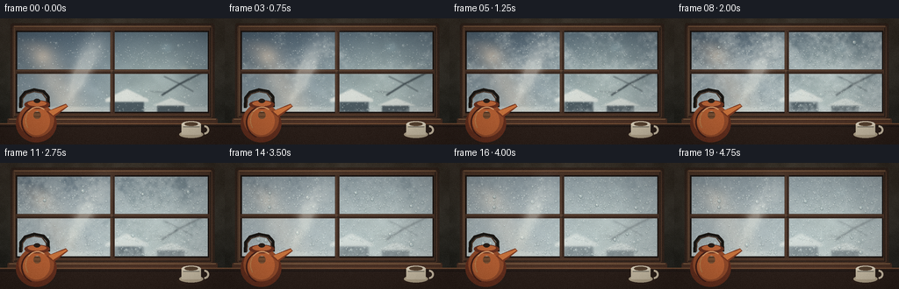
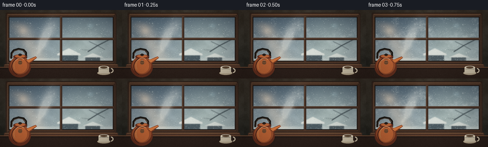
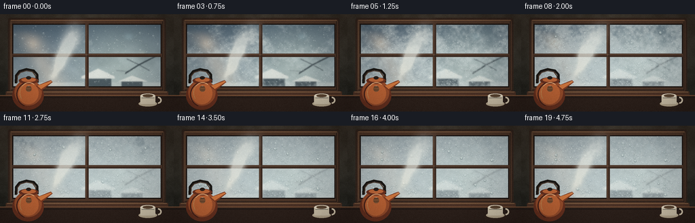
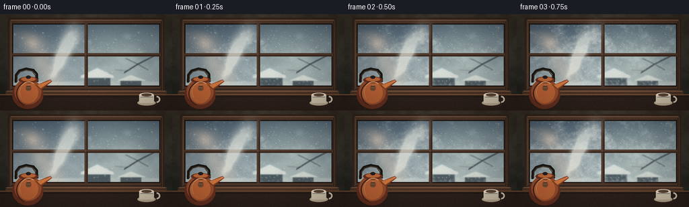
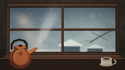
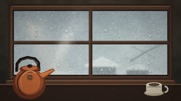
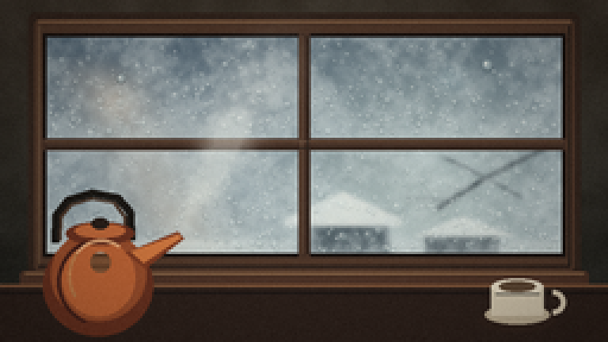
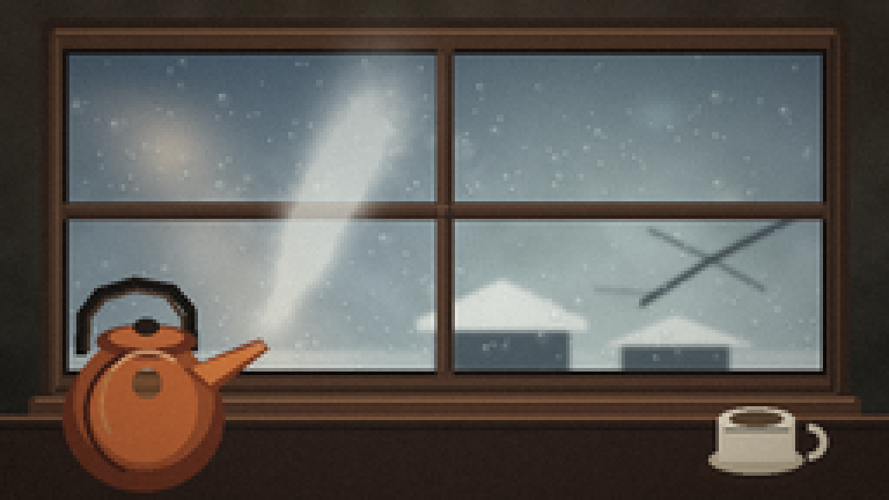
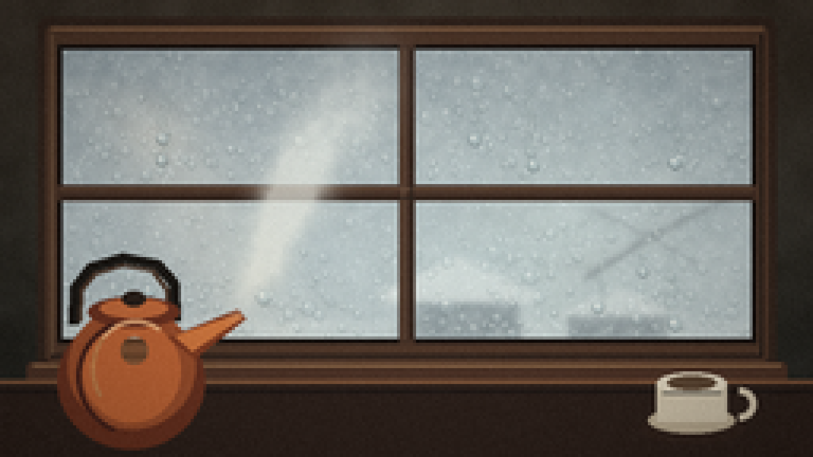

CODING AGENTS AS PIXEL WORLD MODELS
traex/DeepSeek-V4.1-Flash · phygen_112
点击播放 · 原生 RGB 像素
逐轮保存的候选
回放视频、检查图与代码变化。
每份候选均可单独播放。实际图片检查记录在下方工具轨迹中。
候选 01播放与检查图
点击播放 · 原生 RGB 像素


展开代码变化
--- 上一保存版本
+++ 本次保存版本
@@ -0,0 +1,513 @@
+from pathlib import Path
+import math
+
+import numpy as np
+from PIL import Image, ImageDraw, ImageFilter
+
+import artifact_io
+
+
+W, H = 256, 144
+N = 20
+S = 3
+RW, RH = W * S, H * S
+CASE = Path(__file__).resolve().parent
+
+
+def smoothstep(a, b, x):
+ t = np.clip((x - a) / (b - a + 1e-9), 0.0, 1.0)
+ return t * t * (3.0 - 2.0 * t)
+
+
+def lerp(a, b, t):
+ return a + (b - a) * t
+
+
+def fimg(a):
+ return np.clip(a, 0, 255).astype(np.uint8)
+
+
+def rgb_blur(arr, radius):
+ im = Image.fromarray(fimg(arr))
+ return np.asarray(im.filter(ImageFilter.GaussianBlur(radius))).astype(np.float32)
+
+
+def mask_blur(arr, radius):
+ im = Image.fromarray(fimg(arr * 255.0))
+ return np.asarray(im.filter(ImageFilter.GaussianBlur(radius))).astype(np.float32) / 255.0
+
+
+def vertical_gradient(h, w, top, bottom, power=1.0):
+ y = np.linspace(0.0, 1.0, h, dtype=np.float32)[:, None, None]
+ y = y ** power
+ top = np.array(top, dtype=np.float32)[None, None, :]
+ bottom = np.array(bottom, dtype=np.float32)[None, None, :]
+ return np.broadcast_to(lerp(top, bottom, y), (h, w, 3)).copy()
+
+
+def noise_field(w, h, scale, octaves, seed):
+ rng = np.random.default_rng(seed)
+ out = np.zeros((h, w), dtype=np.float32)
+ norm = 0.0
+ amp = 1.0
+ for _ in range(octaves):
+ gw = max(2, int(w / scale) + 2)
+ gh = max(2, int(h / scale) + 2)
+ base = rng.random((gh, gw), dtype=np.float32)
+ im = Image.fromarray(base, mode="F").resize((w, h), Image.Resampling.BICUBIC)
+ out += np.asarray(im, dtype=np.float32) * amp
+ norm += amp
+ scale = max(2.0, scale * 0.52)
+ amp *= 0.55
+ out /= norm
+ lo, hi = np.percentile(out, 1), np.percentile(out, 99)
+ return np.clip((out - lo) / (hi - lo + 1e-6), 0, 1)
+
+
+def rounded_rect_mask(w, h, box, radius):
+ im = Image.new("L", (w, h), 0)
+ ImageDraw.Draw(im).rounded_rectangle(box, radius=radius, fill=255)
+ return np.asarray(im).astype(np.float32) / 255.0
+
+
+def rect_mask(w, h, box):
+ x0, y0, x1, y1 = box
+ yy, xx = np.ogrid[:h, :w]
+ return ((xx >= x0) & (xx < x1) & (yy >= y0) & (yy < y1)).astype(np.float32)
+
+
+def overlay_rgba(base, layer):
+ base_im = Image.fromarray(fimg(base)).convert("RGBA")
+ out = Image.alpha_composite(base_im, layer)
+ return np.asarray(out.convert("RGB")).astype(np.float32)
+
+
+def make_outside():
+ sky = vertical_gradient(
+ RH,
+ RW,
+ (55, 78, 98),
+ (164, 180, 184),
+ power=0.72,
+ )
+ y, x = np.mgrid[0:RH, 0:RW].astype(np.float32)
+ clouds = noise_field(RW, RH, 55, 5, 4)
+ cloud_band = smoothstep(45, 205, y) * (1.0 - smoothstep(245, 305, y))
+ sky += ((clouds - 0.5) * 20.0 * cloud_band)[..., None]
+
+ # Cold, low winter light along the horizon.
+ glow = np.exp(-((x - 0.69 * RW) ** 2 + (y - 0.50 * RH) ** 2) / (2 * (0.18 * RW) ** 2))
+ sky += glow[..., None] * np.array([36, 35, 25], dtype=np.float32)
+
+ # Snowy ground and distant buildings.
+ ground_y = 0.70 * RH
+ ground = smoothstep(ground_y - 3, ground_y + 3, y)
+ snow_color = np.array([188, 199, 198], dtype=np.float32)
+ sky = sky * (1 - ground[..., None] * 0.72) + snow_color * ground[..., None] * 0.72
+
+ im = Image.fromarray(fimg(sky)).convert("RGBA")
+ d = ImageDraw.Draw(im)
+ d.rectangle((0, 0.76 * RH, RW, RH), fill=(174, 185, 184, 255))
+ d.polygon(
+ [(0.02 * RW, 0.79 * RH), (0.12 * RW, 0.74 * RH), (0.24 * RW, 0.78 * RH),
+ (0.34 * RW, 0.73 * RH), (0.46 * RW, 0.78 * RH), (0.58 * RW, 0.74 * RH),
+ (0.72 * RW, 0.79 * RH), (0.84 * RW, 0.74 * RH), (RW, 0.77 * RH), (RW, RH), (0, RH)],
+ fill=(169, 181, 180, 255),
+ )
+ d.polygon(
+ [(0.04 * RW, 0.82 * RH), (0.17 * RW, 0.76 * RH), (0.31 * RW, 0.81 * RH),
+ (0.47 * RW, 0.75 * RH), (0.61 * RW, 0.81 * RH), (0.79 * RW, 0.75 * RH),
+ (0.94 * RW, 0.80 * RW), (RW, RH), (0, RH)],
+ fill=(207, 214, 211, 255),
+ )
+
+ # Muted rooftops and bare branches sit just behind the glass.
+ d.rectangle((0.49 * RW, 0.62 * RH, 0.64 * RW, 0.79 * RH), fill=(75, 91, 99, 255))
+ d.polygon(
+ [(0.47 * RW, 0.64 * RH), (0.565 * RW, 0.56 * RH), (0.66 * RW, 0.64 * RH)],
+ fill=(86, 99, 104, 255),
+ )
+ d.polygon(
+ [(0.47 * RW, 0.64 * RH), (0.565 * RW, 0.56 * RH), (0.66 * RW, 0.64 * RH),
+ (0.66 * RW, 0.66 * RH), (0.47 * RW, 0.66 * RH)],
+ fill=(212, 218, 214, 255),
+ )
+ d.rectangle((0.70 * RW, 0.68 * RH, 0.82 * RW, 0.80 * RH), fill=(77, 91, 98, 255))
+ d.polygon(
+ [(0.68 * RW, 0.69 * RH), (0.76 * RW, 0.63 * RH), (0.85 * RW, 0.69 * RH)],
+ fill=(211, 218, 214, 255),
+ )
+ branch_color = (48, 61, 68, 255)
+ d.line([(0.91 * RW, 0.42 * RH), (0.80 * RW, 0.52 * RH), (0.72 * RW, 0.61 * RH)], fill=branch_color, width=5)
+ d.line([(0.80 * RW, 0.52 * RH), (0.73 * RW, 0.46 * RH)], fill=branch_color, width=3)
+ d.line([(0.80 * RW, 0.52 * RH), (0.86 * RW, 0.58 * RH)], fill=branch_color, width=3)
+ d.line([(0.74 * RW, 0.59 * RH), (0.67 * RW, 0.58 * RH)], fill=branch_color, width=2)
+
+ outside = np.asarray(im.convert("RGB")).astype(np.float32)
+ outside = rgb_blur(outside, 2.2)
+
+ # Glass reflection: a broad warm streak and a few soft kitchen lights.
+ reflection = np.zeros((RH, RW, 3), dtype=np.float32)
+ band = np.exp(-((x - 0.10 * RW - 0.52 * y) / (0.075 * RW)) ** 2)
+ band *= smoothstep(0.13 * RH, 0.25 * RH, y) * (1.0 - smoothstep(0.65 * RH, 0.83 * RH, y))
+ reflection += band[..., None] * np.array([78, 52, 30], dtype=np.float32)
+ for cx, cy, rx, ry, strength, col in [
+ (0.19, 0.30, 0.055, 0.08, 0.55, (112, 80, 47)),
+ (0.74, 0.23, 0.035, 0.05, 0.42, (64, 80, 83)),
+ (0.82, 0.40, 0.025, 0.035, 0.25, (127, 100, 65)),
+ ]:
+ blob = np.exp(
+ -(((x - cx * RW) / (rx * RW)) ** 2 + ((y - cy * RH) / (ry * RH)) ** 2) * 2.0
+ )
+ reflection += blob[..., None] * np.array(col, dtype=np.float32) * strength
+ outside += reflection * 0.55
+ outside = np.clip(outside, 0, 255)
+ return outside
+
+
+def make_frame_layer():
+ layer = Image.new("RGBA", (RW, RH), (0, 0, 0, 0))
+ d = ImageDraw.Draw(layer)
+ outer = (35, 16, 733, 350)
+ inner = (54, 42, 714, 324)
+ d.rounded_rectangle(outer, radius=10, fill=(50, 38, 32, 255))
+ d.rounded_rectangle((43, 24, 725, 342), radius=7, fill=(77, 55, 43, 255))
+ d.rectangle((54, 42, 714, 324), fill=(0, 0, 0, 0))
+
+ # Warm bevels and dark inner shadows.
+ d.line((48, 27, 720, 27), fill=(143, 104, 74, 220), width=3)
+ d.line((48, 336, 720, 336), fill=(35, 27, 25, 230), width=3)
+ d.line((49, 32, 49, 334), fill=(126, 91, 67, 170), width=3)
+ d.line((719, 32, 719, 334), fill=(34, 27, 24, 210), width=3)
+ d.rectangle(inner, outline=(26, 22, 21, 255), width=5)
+
+ # Center mullions.
+ d.rectangle((377, 42, 391, 324), fill=(67, 48, 39, 255))
+ d.rectangle((54, 175, 714, 189), fill=(67, 48, 39, 255))
+ d.line((380, 46, 380, 320), fill=(125, 91, 68, 180), width=2)
+ d.line((57, 178, 711, 178), fill=(128, 94, 70, 170), width=2)
+ d.line((388, 46, 388, 320), fill=(35, 28, 25, 220), width=2)
+ d.line((57, 186, 711, 186), fill=(35, 28, 25, 220), width=2)
+
+ # Sill.
+ d.rounded_rectangle((25, 342, 743, 367), radius=5, fill=(76, 52, 41, 255))
+ d.line((31, 345, 737, 345), fill=(155, 115, 81, 220), width=3)
+ d.line((31, 362, 737, 362), fill=(38, 28, 24, 230), width=3)
+ return layer
+
+
+def make_foreground_layer():
+ layer = Image.new("RGBA", (RW, RH), (0, 0, 0, 0))
+ d = ImageDraw.Draw(layer)
+
+ # Countertop.
+ d.rectangle((0, 359, RW, RH), fill=(43, 33, 29, 255))
+ d.line((0, 360, RW, 360), fill=(123, 84, 59, 255), width=4)
+ d.line((0, 370, RW, 370), fill=(28, 24, 23, 255), width=3)
+
+ # Kettle handle behind the body.
+ handle_pts = [
+ (70, 306), (71, 271), (86, 252), (116, 243), (147, 249),
+ (164, 268), (165, 303),
+ ]
+ d.line(handle_pts, fill=(25, 24, 22, 255), width=10, joint="curve")
+ d.line([(76, 303), (77, 274), (90, 258), (116, 250), (143, 255), (157, 274), (158, 302)],
+ fill=(73, 55, 44, 255), width=4, joint="curve")
+
+ # Copper kettle body.
+ d.ellipse((54, 296, 193, 424), fill=(103, 50, 34, 255))
+ d.ellipse((64, 289, 184, 405), fill=(151, 78, 46, 255))
+ d.ellipse((78, 302, 170, 399), fill=(189, 101, 56, 255))
+ d.polygon([(158, 319), (224, 292), (232, 301), (183, 339)], fill=(126, 60, 36, 255))
+ d.polygon([(165, 317), (225, 296), (228, 300), (181, 332)], fill=(207, 120, 65, 255))
+ d.ellipse((83, 280, 169, 309), fill=(105, 50, 34, 255))
+ d.ellipse((94, 282, 158, 300), fill=(191, 105, 60, 255))
+ d.ellipse((115, 275, 137, 289), fill=(39, 31, 27, 255))
+ d.arc((72, 300, 184, 412), 112, 248, fill=(69, 34, 28, 255), width=5)
+ d.arc((86, 302, 169, 395), 145, 305, fill=(235, 155, 91, 190), width=4)
+ d.ellipse((114, 318, 139, 344), fill=(225, 141, 78, 80))
+
+ # Cup at the right edge.
+ d.ellipse((604, 391, 703, 419), fill=(47, 35, 30, 255))
+ d.ellipse((612, 385, 694, 409), fill=(187, 174, 149, 255))
+ d.rectangle((620, 363, 686, 398), fill=(211, 201, 178, 255))
+ d.ellipse((620, 352, 686, 372), fill=(231, 222, 201, 255))
+ d.ellipse((630, 355, 676, 368), fill=(92, 72, 54, 255))
+ d.arc((682, 366, 714, 397), 270, 90, fill=(214, 202, 179, 255), width=7)
+ d.line((626, 371, 681, 371), fill=(246, 236, 211, 100), width=3)
+ return layer
+
+
+def build_static():
+ y, x = np.mgrid[0:RH, 0:RW].astype(np.float32)
+ wall = vertical_gradient(RH, RW, (55, 49, 42), (31, 34, 32), power=0.9)
+ wall_noise = noise_field(RW, RH, 38, 4, 22)
+ wall += ((wall_noise - 0.5) * 11.0)[..., None]
+
+ # Soft spill from the cold window.
+ dx = (x - 0.5 * RW) / (0.56 * RW)
+ dy = (y - 0.42 * RH) / (0.58 * RH)
+ spill = np.exp(-(dx * dx + dy * dy) * 2.2)
+ wall += spill[..., None] * np.array([17, 19, 16], dtype=np.float32)
+
+ outside = make_outside()
+ pane_boxes = [(54, 42, 377, 175), (391, 42, 714, 175),
+ (54, 189, 377, 324), (391, 189, 714, 324)]
+ pane_mask = np.zeros((RH, RW), dtype=np.float32)
+ for box in pane_boxes:
+ pane_mask = np.maximum(pane_mask, rect_mask(RW, RH, box))
+ pane_mask = mask_blur(pane_mask, 0.7)
+
+ frame_layer = make_frame_layer()
+ fg_layer = make_foreground_layer()
+ return wall, outside, pane_mask, pane_boxes, frame_layer, fg_layer
+
+
+def edge_and_bottom_fields(pane_boxes):
+ edge = np.full((RH, RW), 500.0, dtype=np.float32)
+ bottom = np.zeros((RH, RW), dtype=np.float32)
+ y, x = np.mgrid[0:RH, 0:RW].astype(np.float32)
+ for x0, y0, x1, y1 in pane_boxes:
+ m = rect_mask(RW, RH, (x0, y0, x1, y1)) > 0
+ dx = np.minimum(x - x0, x1 - 1 - x)
+ dy = np.minimum(y - y0, y1 - 1 - y)
+ edge[m] = np.minimum(dx[m], dy[m])
+ bottom[m] = (y[m] - y0) / max(1.0, y1 - y0)
+ edge = np.clip(edge, 0, 90)
+ return np.exp(-edge / 18.0), bottom
+
+
+def make_condensation(outside, pane_mask, pane_boxes, cond_t, coarse, fine, micro, edge_prox, bottom):
+ y, x = np.mgrid[0:RH, 0:RW].astype(np.float32)
+ potential = 0.43 * coarse + 0.29 * fine + 0.20 * edge_prox + 0.18 * bottom
+ potential = np.clip((potential - 0.18) / 0.74, 0, 1)
+ activation = cond_t * 1.52 + (potential - 0.50) * 0.84 - 0.17
+ cond = smoothstep(0.02, 0.83, activation)
+
+ # Fine contact haze blooms at the lower pane edges first.
+ contact = edge_prox * smoothstep(0.18, 0.95, cond_t) * (0.25 + 0.75 * bottom)
+ fog = np.clip(cond * 0.92 + contact * 0.28, 0, 0.96)
+ fog *= (0.80 + 0.20 * fine)
+
+ outside_soft = rgb_blur(outside, 3.5)
+ glass = outside * (1.0 - fog[..., None] * 0.48) + outside_soft * (fog[..., None] * 0.48)
+
+ fog_color = np.empty((RH, RW, 3), dtype=np.float32)
+ fog_color[..., 0] = 197 + 11 * coarse
+ fog_color[..., 1] = 210 + 9 * coarse
+ fog_color[..., 2] = 212 + 7 * coarse
+ # A faint warm tint from the kitchen reflection remains in the fog.
+ warm = np.exp(-((x - 0.30 * RW) / (0.33 * RW)) ** 2) * (1.0 - y / RH) * 0.18
+ fog_color += warm[..., None] * np.array([25, 12, -2], dtype=np.float32)
+ glass = glass * (1.0 - fog[..., None] * 0.58) + fog_color * (fog[..., None] * 0.58)
+
+ # Tiny crystalline pinpricks across the fogged area.
+ sparkle = smoothstep(0.82, 0.98, micro) * cond * 23.0
+ glass += sparkle[..., None]
+ glass = np.clip(glass, 0, 255)
+ return glass, cond, fog
+
+
+def draw_droplets(cond_t, cond, edge_prox, bottom, pane_boxes):
+ layer = Image.new("RGBA", (RW, RH), (0, 0, 0, 0))
+ d = ImageDraw.Draw(layer)
+ rng = np.random.default_rng(81)
+ for pane_index, (x0, y0, x1, y1) in enumerate(pane_boxes):
+ for i in range(180):
+ u = rng.random()
+ v = rng.random() ** 0.72
+ px = x0 + 7 + u * (x1 - x0 - 14)
+ py = y0 + 7 + v * (y1 - y0 - 14)
+ activation = (
+ 0.22 * cond_t + 0.25 * bottom[int(py), int(px)]
+ + 0.12 * edge_prox[int(py), int(px)] + 0.55 * rng.random()
+ + 0.20 * cond[int(py), int(px)] - 0.26
+ )
+ if activation <= 0:
+ continue
+ alpha = int(np.clip(activation, 0, 1) * 112)
+ r = 1.3 + 2.4 * (rng.random() ** 2.1)
+ if rng.random() < 0.12:
+ r *= 1.75
+ if rng.random() < 0.12:
+ r *= 0.55
+ d.ellipse((px - r - 1, py - r, px + r + 1, py + r + 2), fill=(58, 76, 79, alpha // 2))
+ d.ellipse((px - r, py - r, px + r, py + r), fill=(183, 201, 203, alpha))
+ d.ellipse((px - r * 0.55, py - r * 0.60, px + r * 0.05, py - r * 0.05),
+ fill=(241, 245, 239, min(235, alpha + 85)))
+ return layer
+
+
+def draw_runnels(cond_t, pane_boxes):
+ layer = Image.new("RGBA", (RW, RH), (0, 0, 0, 0))
+ d = ImageDraw.Draw(layer)
+ rng = np.random.default_rng(303)
+ for pane_index, (x0, y0, x1, y1) in enumerate(pane_boxes):
+ for i in range(3):
+ start_t = 0.44 + 0.11 * i + 0.05 * pane_index
+ a = np.clip((cond_t - start_t) / 0.32, 0, 1)
+ if a <= 0:
+ continue
+ px = x0 + (0.18 + 0.64 * rng.random()) * (x1 - x0)
+ sy = y0 + (0.28 + 0.18 * rng.random()) * (y1 - y0)
+ length = (0.35 + 0.46 * rng.random()) * (y1 - sy)
+ points = []
+ for k in range(17):
+ q = k / 16.0
+ py = sy + q * length * a
+ wiggle = math.sin(q * 11.0 + i * 2.3 + pane_index) * (1.3 + 2.5 * q)
+ points.append((px + wiggle, py))
+ d.line(points, fill=(84, 105, 107, 34), width=6, joint="curve")
+ d.line(points, fill=(208, 222, 220, 46), width=2, joint="curve")
+ ex, ey = points[-1]
+ rr = 4.0 + 2.2 * rng.random()
+ d.ellipse((ex - rr - 1, ey - rr, ex + rr + 1, ey + rr + 2), fill=(49, 66, 69, 90))
+ d.ellipse((ex - rr, ey - rr, ex + rr, ey + rr), fill=(177, 197, 199, 135))
+ d.ellipse((ex - rr * 0.55, ey - rr * 0.60, ex, ey), fill=(244, 247, 239, 225))
+ return layer
+
+
+def add_frost(layer, cond_t, pane_boxes):
+ if cond_t < 0.42:
+ return layer
+ d = ImageDraw.Draw(layer)
+ rng = np.random.default_rng(55)
+ strength = int(np.clip((cond_t - 0.42) / 0.58, 0, 1) * 95)
+ for pane_index, (x0, y0, x1, y1) in enumerate(pane_boxes):
+ for i in range(4):
+ bx = x0 + (0.12 + 0.76 * rng.random()) * (x1 - x0)
+ by = y1 - 2
+ for j in range(4):
+ ang = -math.pi / 2 + (rng.random() - 0.5) * 1.35
+ length = (10 + 25 * rng.random()) * (0.5 + cond_t)
+ ex = bx + math.cos(ang) * length
+ ey = by + math.sin(ang) * length
+ d.line((bx, by, ex, ey), fill=(228, 238, 235, strength), width=1)
+ d.line((ex, ey, ex + math.cos(ang - 0.8) * length * 0.28,
+ ey + math.sin(ang - 0.8) * length * 0.28),
+ fill=(228, 238, 235, strength // 2), width=1)
+ bx, by = ex, ey
+ return layer
+
+
+def make_steam(t, cond_t, fine):
+ alpha = np.zeros((RH, RW), dtype=np.float32)
+ yy, xx = np.mgrid[0:RH, 0:RW].astype(np.float32)
+ spout_x, spout_y = 224.0, 297.0
+ rng = np.random.default_rng(190)
+ for i in range(24):
+ seed = rng.random() * 10
+ phase = (t * 1.08 + i / 24.0 + 0.035 * rng.random()) % 1.0
+ rise = 235.0 * phase
+ px = spout_x + 118.0 * phase + math.sin(phase * 8.0 + seed) * (7.0 + 14.0 * phase)
+ py = spout_y - rise
+ sigma_x = 8.0 + 35.0 * phase
+ sigma_y = 10.0 + 42.0 * phase
+ x0 = max(0, int(px - 2.5 * sigma_x))
+ x1 = min(RW, int(px + 2.5 * sigma_x) + 1)
+ y0 = max(0, int(py - 2.5 * sigma_y))
+ y1 = min(RH, int(py + 2.5 * sigma_y) + 1)
+ if x1 <= x0 or y1 <= y0:
+ continue
+ lx = xx[y0:y1, x0:x1] - px
+ ly = yy[y0:y1, x0:x1] - py
+ shear = 0.20 * ly
+ blob = np.exp(-((lx + shear) ** 2 / (2 * sigma_x ** 2) + ly ** 2 / (2 * sigma_y ** 2)) * 1.9)
+ envelope = math.sin(math.pi * min(1.0, max(0.0, phase))) ** 0.58
+ envelope *= 0.50 + 0.50 * (1.0 - phase)
+ alpha[y0:y1, x0:x1] += blob * envelope * (0.12 + 0.11 * (1.0 - phase))
+
+ # Thin rising wisps keep the plume from reading as isolated blobs.
+ wisp_layer = Image.new("L", (RW, RH), 0)
+ wd = ImageDraw.Draw(wisp_layer)
+ for i in range(13):
+ seed = i * 1.73
+ pts = []
+ for k in range(24):
+ q = k / 23.0
+ px = spout_x + q * (65 + 38 * math.sin(seed)) + math.sin(q * 8 + seed + t * 5) * (2 + 12 * q)
+ py = spout_y - q * (190 + 36 * math.cos(seed))
+ pts.append((px, py))
+ wd.line(pts, fill=42 + i % 3 * 8, width=2, joint="curve")
+ wisp = np.asarray(wisp_layer).astype(np.float32) / 255.0
+ wisp = mask_blur(wisp, 5.0)
+ alpha = np.maximum(alpha, wisp * (0.10 + 0.09 * (1.0 - t)))
+
+ alpha = mask_blur(alpha, 3.2)
+ alpha *= 0.76 + 0.24 * fine
+ alpha *= (1.0 - 0.34 * cond_t)
+ return np.clip(alpha * 1.55, 0, 0.52)
+
+
+def composite_steam(img, steam_alpha, t):
+ y, x = np.mgrid[0:RH, 0:RW].astype(np.float32)
+ steam_rgb = np.empty((RH, RW, 3), dtype=np.float32)
+ warm = np.exp(-((x - 0.24 * RW) ** 2 + (y - 0.68 * RH) ** 2) / (2 * (0.18 * RW) ** 2))
+ steam_rgb[..., 0] = 232 + 8 * warm
+ steam_rgb[..., 1] = 236 + 2 * warm
+ steam_rgb[..., 2] = 232 - 5 * warm
+ a = steam_alpha[..., None]
+ return img * (1.0 - a * 0.82) + steam_rgb * (a * 0.82)
+
+
+def final_finish(img, frame_index):
+ im = Image.fromarray(fimg(img)).resize((W, H), Image.Resampling.LANCZOS)
+ arr = np.asarray(im).astype(np.float32)
+ y, x = np.mgrid[0:H, 0:W].astype(np.float32)
+
+ # Gentle lens vignette and a cool edge falloff.
+ dx = (x - W * 0.5) / (W * 0.54)
+ dy = (y - H * 0.5) / (H * 0.58)
+ vig = 1.0 - 0.20 * np.clip(dx * dx + dy * dy, 0, 1.4)
+ arr *= vig[..., None]
+
+ # Bloom around the brightest steam and condensation.
+ bright = np.clip(arr - 188.0, 0, None)
+ bright_im = Image.fromarray(fimg(bright)).filter(ImageFilter.GaussianBlur(4.0))
+ arr += np.asarray(bright_im).astype(np.float32) * 0.20
+
+ # Slight film grain and warm/cool split toning.
+ rng = np.random.default_rng(900 + frame_index)
+ grain = rng.normal(0.0, 1.35, (H, W, 1)).astype(np.float32)
+ arr += grain
+ arr[..., 0] += 2.0
+ arr[..., 2] -= 1.5
+ return fimg(arr)
+
+
+def main():
+ wall, outside, pane_mask, pane_boxes, frame_layer, fg_layer = build_static()
+ edge_prox, bottom = edge_and_bottom_fields(pane_boxes)
+ coarse = noise_field(RW, RH, 62, 5, 12)
+ fine = noise_field(RW, RH, 11, 4, 28)
+ micro = noise_field(RW, RH, 2.2, 2, 73)
+
+ frames = []
+ for i in range(N):
+ t = i / (N - 1)
+ cond_t = np.clip(t ** 0.82, 0, 1)
+ glass, cond, fog = make_condensation(
+ outside, pane_mask, pane_boxes, cond_t, coarse, fine, micro, edge_prox, bottom
+ )
+
+ drop_layer = draw_droplets(cond_t, cond, edge_prox, bottom, pane_boxes)
+ runnel_layer = draw_runnels(cond_t, pane_boxes)
+ add_frost(runnel_layer, cond_t, pane_boxes)
+ glass = overlay_rgba(glass, drop_layer)
+ glass = overlay_rgba(glass, runnel_layer)
+
+ img = wall.copy()
+ img = img * (1.0 - pane_mask[..., None]) + glass * pane_mask[..., None]
+ img = overlay_rgba(img, frame_layer)
+ img = overlay_rgba(img, fg_layer)
+
+ steam_alpha = make_steam(t, cond_t, fine)
+ img = composite_steam(img, steam_alpha, t)
+ frames.append(final_finish(img, i))
+
+ frames = np.stack(frames, axis=0).astype(np.uint8)
+ artifact_io.save(frames, CASE)
+
+
+if __name__ == "__main__":
+ main()
候选 02播放与检查图
点击播放 · 原生 RGB 像素


展开代码变化
--- 上一保存版本
+++ 本次保存版本
@@ -54,7 +54,7 @@
gw = max(2, int(w / scale) + 2)
gh = max(2, int(h / scale) + 2)
base = rng.random((gh, gw), dtype=np.float32)
- im = Image.fromarray(base, mode="F").resize((w, h), Image.Resampling.BICUBIC)
+ im = Image.fromarray(base).resize((w, h), Image.Resampling.BICUBIC)
out += np.asarray(im, dtype=np.float32) * amp
norm += amp
scale = max(2.0, scale * 0.52)
@@ -279,14 +279,17 @@
def make_condensation(outside, pane_mask, pane_boxes, cond_t, coarse, fine, micro, edge_prox, bottom):
y, x = np.mgrid[0:RH, 0:RW].astype(np.float32)
- potential = 0.43 * coarse + 0.29 * fine + 0.20 * edge_prox + 0.18 * bottom
+ contact_plume = np.exp(
+ -((x - 0.43 * RW) / (0.32 * RW)) ** 2 - ((y - 0.55 * RH) / (0.47 * RH)) ** 2
+ )
+ potential = 0.39 * coarse + 0.24 * fine + 0.18 * edge_prox + 0.16 * bottom + 0.14 * contact_plume
potential = np.clip((potential - 0.18) / 0.74, 0, 1)
- activation = cond_t * 1.52 + (potential - 0.50) * 0.84 - 0.17
+ activation = cond_t * 1.64 + (potential - 0.50) * 0.78 + 0.10 * contact_plume - 0.12
cond = smoothstep(0.02, 0.83, activation)
# Fine contact haze blooms at the lower pane edges first.
contact = edge_prox * smoothstep(0.18, 0.95, cond_t) * (0.25 + 0.75 * bottom)
- fog = np.clip(cond * 0.92 + contact * 0.28, 0, 0.96)
+ fog = np.clip(cond * 1.04 + contact * 0.24, 0, 1.0)
fog *= (0.80 + 0.20 * fine)
outside_soft = rgb_blur(outside, 3.5)
@@ -299,7 +302,7 @@
# A faint warm tint from the kitchen reflection remains in the fog.
warm = np.exp(-((x - 0.30 * RW) / (0.33 * RW)) ** 2) * (1.0 - y / RH) * 0.18
fog_color += warm[..., None] * np.array([25, 12, -2], dtype=np.float32)
- glass = glass * (1.0 - fog[..., None] * 0.58) + fog_color * (fog[..., None] * 0.58)
+ glass = glass * (1.0 - fog[..., None] * 0.70) + fog_color * (fog[..., None] * 0.70)
# Tiny crystalline pinpricks across the fogged area.
sparkle = smoothstep(0.82, 0.98, micro) * cond * 23.0
@@ -313,7 +316,7 @@
d = ImageDraw.Draw(layer)
rng = np.random.default_rng(81)
for pane_index, (x0, y0, x1, y1) in enumerate(pane_boxes):
- for i in range(180):
+ for i in range(115):
u = rng.random()
v = rng.random() ** 0.72
px = x0 + 7 + u * (x1 - x0 - 14)
@@ -323,18 +326,16 @@
+ 0.12 * edge_prox[int(py), int(px)] + 0.55 * rng.random()
+ 0.20 * cond[int(py), int(px)] - 0.26
)
- if activation <= 0:
+ if activation <= 0.10:
continue
- alpha = int(np.clip(activation, 0, 1) * 112)
- r = 1.3 + 2.4 * (rng.random() ** 2.1)
- if rng.random() < 0.12:
- r *= 1.75
- if rng.random() < 0.12:
- r *= 0.55
- d.ellipse((px - r - 1, py - r, px + r + 1, py + r + 2), fill=(58, 76, 79, alpha // 2))
+ alpha = int(np.clip(activation, 0, 1) * 92)
+ r = 1.7 + 3.0 * (rng.random() ** 2.0)
+ if rng.random() < 0.17:
+ r *= 1.55
+ d.ellipse((px - r - 1, py - r, px + r + 1, py + r + 2), fill=(51, 69, 72, alpha // 2))
d.ellipse((px - r, py - r, px + r, py + r), fill=(183, 201, 203, alpha))
- d.ellipse((px - r * 0.55, py - r * 0.60, px + r * 0.05, py - r * 0.05),
- fill=(241, 245, 239, min(235, alpha + 85)))
+ d.ellipse((px - r * 0.55, py - r * 0.62, px + r * 0.05, py - r * 0.08),
+ fill=(239, 245, 241, min(210, alpha + 65)))
return layer
@@ -372,20 +373,20 @@
return layer
d = ImageDraw.Draw(layer)
rng = np.random.default_rng(55)
- strength = int(np.clip((cond_t - 0.42) / 0.58, 0, 1) * 95)
+ strength = int(np.clip((cond_t - 0.48) / 0.52, 0, 1) * 58)
for pane_index, (x0, y0, x1, y1) in enumerate(pane_boxes):
- for i in range(4):
+ for i in range(2):
bx = x0 + (0.12 + 0.76 * rng.random()) * (x1 - x0)
by = y1 - 2
for j in range(4):
ang = -math.pi / 2 + (rng.random() - 0.5) * 1.35
- length = (10 + 25 * rng.random()) * (0.5 + cond_t)
+ length = (9 + 19 * rng.random()) * (0.5 + cond_t)
ex = bx + math.cos(ang) * length
ey = by + math.sin(ang) * length
- d.line((bx, by, ex, ey), fill=(228, 238, 235, strength), width=1)
+ d.line((bx, by, ex, ey), fill=(220, 233, 231, strength), width=1)
d.line((ex, ey, ex + math.cos(ang - 0.8) * length * 0.28,
ey + math.sin(ang - 0.8) * length * 0.28),
- fill=(228, 238, 235, strength // 2), width=1)
+ fill=(220, 233, 231, strength // 2), width=1)
bx, by = ex, ey
return layer
@@ -395,14 +396,14 @@
yy, xx = np.mgrid[0:RH, 0:RW].astype(np.float32)
spout_x, spout_y = 224.0, 297.0
rng = np.random.default_rng(190)
- for i in range(24):
+ for i in range(27):
seed = rng.random() * 10
phase = (t * 1.08 + i / 24.0 + 0.035 * rng.random()) % 1.0
rise = 235.0 * phase
px = spout_x + 118.0 * phase + math.sin(phase * 8.0 + seed) * (7.0 + 14.0 * phase)
py = spout_y - rise
- sigma_x = 8.0 + 35.0 * phase
- sigma_y = 10.0 + 42.0 * phase
+ sigma_x = 8.0 + 28.0 * phase
+ sigma_y = 10.0 + 37.0 * phase
x0 = max(0, int(px - 2.5 * sigma_x))
x1 = min(RW, int(px + 2.5 * sigma_x) + 1)
y0 = max(0, int(py - 2.5 * sigma_y))
@@ -414,13 +415,13 @@
shear = 0.20 * ly
blob = np.exp(-((lx + shear) ** 2 / (2 * sigma_x ** 2) + ly ** 2 / (2 * sigma_y ** 2)) * 1.9)
envelope = math.sin(math.pi * min(1.0, max(0.0, phase))) ** 0.58
- envelope *= 0.50 + 0.50 * (1.0 - phase)
- alpha[y0:y1, x0:x1] += blob * envelope * (0.12 + 0.11 * (1.0 - phase))
+ envelope *= 0.55 + 0.45 * (1.0 - phase)
+ alpha[y0:y1, x0:x1] += blob * envelope * (0.19 + 0.13 * (1.0 - phase))
# Thin rising wisps keep the plume from reading as isolated blobs.
wisp_layer = Image.new("L", (RW, RH), 0)
wd = ImageDraw.Draw(wisp_layer)
- for i in range(13):
+ for i in range(9):
seed = i * 1.73
pts = []
for k in range(24):
@@ -428,15 +429,15 @@
px = spout_x + q * (65 + 38 * math.sin(seed)) + math.sin(q * 8 + seed + t * 5) * (2 + 12 * q)
py = spout_y - q * (190 + 36 * math.cos(seed))
pts.append((px, py))
- wd.line(pts, fill=42 + i % 3 * 8, width=2, joint="curve")
+ wd.line(pts, fill=70 + i % 3 * 10, width=3, joint="curve")
wisp = np.asarray(wisp_layer).astype(np.float32) / 255.0
- wisp = mask_blur(wisp, 5.0)
- alpha = np.maximum(alpha, wisp * (0.10 + 0.09 * (1.0 - t)))
-
- alpha = mask_blur(alpha, 3.2)
+ wisp = mask_blur(wisp, 6.5)
+ alpha = np.maximum(alpha, wisp * (0.20 + 0.12 * (1.0 - t)))
+
+ alpha = mask_blur(alpha, 3.8)
alpha *= 0.76 + 0.24 * fine
- alpha *= (1.0 - 0.34 * cond_t)
- return np.clip(alpha * 1.55, 0, 0.52)
+ alpha *= (1.0 - 0.24 * cond_t)
+ return np.clip(alpha * 2.05, 0, 0.70)
def composite_steam(img, steam_alpha, t):
@@ -446,8 +447,13 @@
steam_rgb[..., 0] = 232 + 8 * warm
steam_rgb[..., 1] = 236 + 2 * warm
steam_rgb[..., 2] = 232 - 5 * warm
+ # A soft cool body under the bright core gives the translucent plume depth.
+ shadow_alpha = mask_blur(steam_alpha, 2.2) * 0.34
+ sa = shadow_alpha[..., None]
+ shadow_rgb = np.array([133, 153, 157], dtype=np.float32)
+ img = img * (1.0 - sa) + shadow_rgb * sa
a = steam_alpha[..., None]
- return img * (1.0 - a * 0.82) + steam_rgb * (a * 0.82)
+ return img * (1.0 - a * 0.92) + steam_rgb * (a * 0.92)
def final_finish(img, frame_index):
可观测工具轨迹
实际执行的命令与返回图片。
命令 1exit 0
/bin/bash -c 'cat prompt.txt'
命令 2exit 0
/bin/bash -c 'cat GENERATION_RULES.md'
命令 3exit 0
/bin/bash -c 'cat task_spec.json'
命令 4exit 0
/bin/bash -c "find . -maxdepth 2 -type f -printf '%p\\n' | sort"
命令 5exit 0
/bin/bash -c "sed -n '1,260p' artifact_io.py"
命令 6exit 0
/bin/bash -c 'python generate.py'
命令 7exit 0
/bin/bash -c "ls -lh index.html pixels.npz inspection.png frames/00.png frames/19.png && python - <<'PY'
import numpy as np
from PIL import Image
ims=[np.asarray(Image.open(f'frames/{i:02d}.png')).astype(np.float32) for i in range(20)]
print('shape', ims[0].shape, 'mean', ims[0].mean(), 'final_mean', ims[-1].mean())
print('mean_abs_change', np.mean([np.abs(ims[i]-ims[i-1]).mean() for i in range(1,20)]))
PY"命令 8exit 0
/bin/bash -c "python - <<'PY'
from PIL import Image
for i in [3,8,12]:
im=Image.open(f'frames/{i:02d}.png')
im.resize((768,432),Image.Resampling.NEAREST).save(f'.tmp/frame{i}.png')
PY"命令 9exit 0
/bin/bash -c 'python generate.py'
命令 10exit 0
/bin/bash -c "python - <<'PY'
from PIL import Image
for i in [0,7,13,19]:
im=Image.open(f'frames/{i:02d}.png')
im.resize((1024,576),Image.Resampling.NEAREST).save(f'.tmp/check{i:02d}.png')
PY"命令 11exit 0
/bin/bash -c "python - <<'PY'
import json
from pathlib import Path
import numpy as np
from PIL import Image
import artifact_io
p=Path('.')
data=np.load('pixels.npz')['pixels']
print('packed tensor:', data.shape, data.dtype)
frames=[]
for i in range(20):
im=np.asarray(Image.open(p/'frames'/f'{i:02d}.png'))
assert im.shape==(144,256,3), im.shape
frames.append(im)
frames=np.stack(frames)
vals=data.astype(np.uint32)
decoded=np.stack([(vals>>16)&255,(vals>>8)&255,vals&255],axis=-1).transpose(0,2,1,3)
print('decoded:', decoded.shape, 'match:', np.array_equal(decoded, frames))
print('frame bytes:', (p/'pixels.npz').stat().st_size, 'html bytes:', (p/'index.html').stat().st_size)
print('mean abs frame delta:', np.mean([np.abs(frames[i].astype(np.int16)-frames[i-1]).mean() for i in range(1,20)]))
print('nonidentical consecutive frames:', sum(not np.array_equal(frames[i],frames[i-1]) for i in range(1,20)))
print('mean RGB start/end:', frames[0].mean((0,1)).round(1), frames[-1].mean((0,1)).round(1))
PY"命令 12exit 1
/bin/bash -c "python - <<'PY'
import numpy as np
from PIL import Image
v=np.load('pixels.npz')['pixels'].astype(np.uint32)
f=np.asarray(Image.open('frames/00.png'))
d=np.stack([(v>>16)&255,(v>>8)&255,v&255],axis=-1).transpose(1,0,2)
print(d.shape, f.shape)
for tr in [d, d.transpose(1,0,2)]:
print(np.max(np.abs(tr.astype(int)-f.astype(int))), np.mean(np.abs(tr.astype(int)-f.astype(int))))
PY"命令 13exit 1
/bin/bash -c "python - <<'PY'
import numpy as np
from PIL import Image
v=np.load('pixels.npz')['pixels'].astype(np.uint32)
print('pixels', v.shape)
print('frame', np.asarray(Image.open('frames/00.png')).shape)
# artifact_io packs HxW, transposes H,W,N -> W,H,N, so decode axis 1 is width.
f=np.asarray(Image.open('frames/00.png'))
d=np.stack([(v>>16)&255,(v>>8)&255,v&255],axis=-1).transpose(1,0,2)
print('decoded', d.shape, 'maxdiff', np.abs(d.astype(int)-f.astype(int)).max())
PY"命令 14exit 1
/bin/bash -c "python - <<'PY'
import numpy as np
from PIL import Image
v=np.load('pixels.npz')['pixels'].astype(np.uint32)
f=np.asarray(Image.open('frames/00.png'))
# Packed tensor layout is width x height x frame.
d=np.stack([(v>>16)&255,(v>>8)&255,v&255],axis=-1).transpose(1,0,2)
print('decoded', d.shape, 'expected', f.shape, 'maxdiff', np.abs(d.astype(int)-f.astype(int)).max())
PY"命令 15exit 0
/bin/bash -c "python - <<'PY'
import numpy as np
v=np.load('pixels.npz')['pixels'].astype(np.uint32)
print(v.shape)
a=np.stack([(v>>16)&255,(v>>8)&255,v&255],axis=-1)
print(a.shape)
PY"命令 16exit 0
/bin/bash -c "python - <<'PY'
import numpy as np
from pathlib import Path
from PIL import Image
v=np.load('pixels.npz')['pixels'].astype(np.uint32)
decoded=np.stack([(v>>16)&255,(v>>8)&255,v&255],axis=-1).transpose(2,0,1,3)
frames=np.stack([np.asarray(Image.open(Path('frames')/f'{i:02d}.png')) for i in range(20)])
print('decoded:', decoded.shape, 'frames:', frames.shape, 'exact match:', np.array_equal(decoded, frames))
print('nonidentical consecutive frames:', sum(not np.array_equal(frames[i],frames[i-1]) for i in range(1,20)))
print('mean abs frame delta:', round(float(np.mean([np.abs(frames[i].astype(np.int16)-frames[i-1]).mean() for i in range(1,20)])), 3))
PY"视觉工具实际返回图片 1

视觉工具实际返回图片 2

视觉工具实际返回图片 3

视觉工具实际返回图片 4

视觉工具实际返回图片 5

视觉工具实际返回图片 6

视觉工具实际返回图片 7
视觉工具实际返回图片 8

保存候选 2 份；完成命令 16 次；可验证图片返回 8 张。原始 API 响应与完整日志保留在本地。